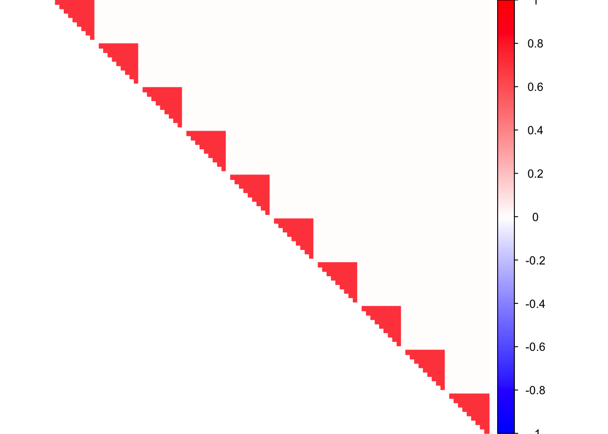
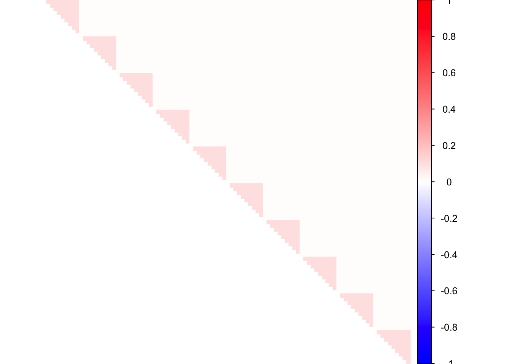
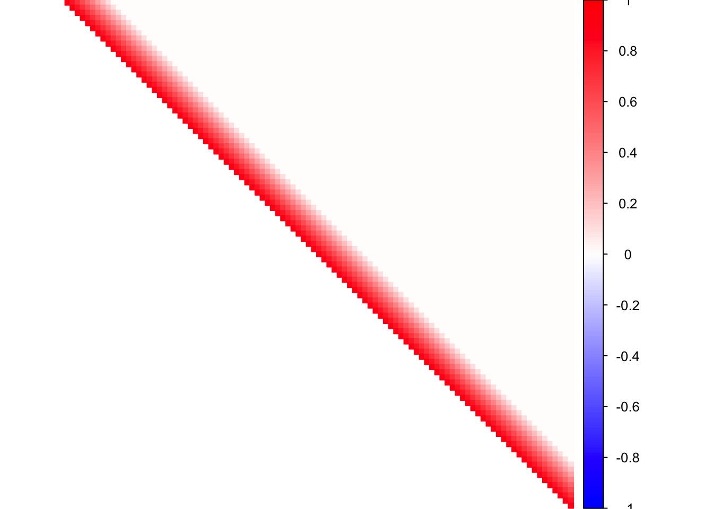
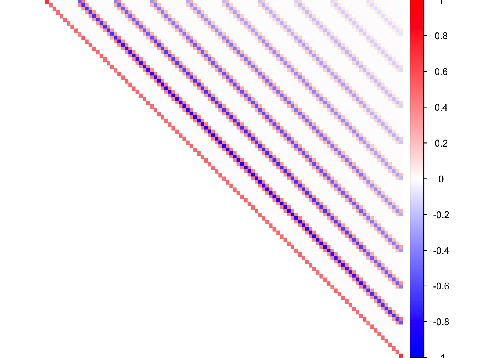
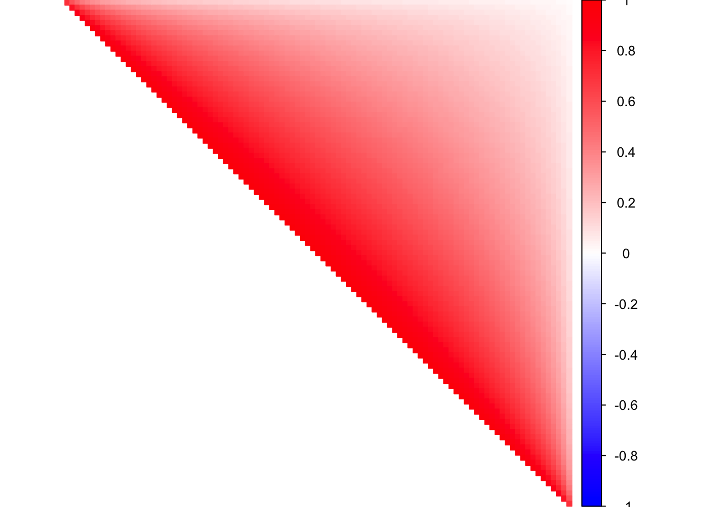
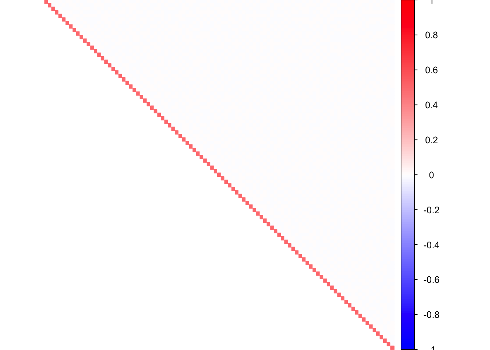
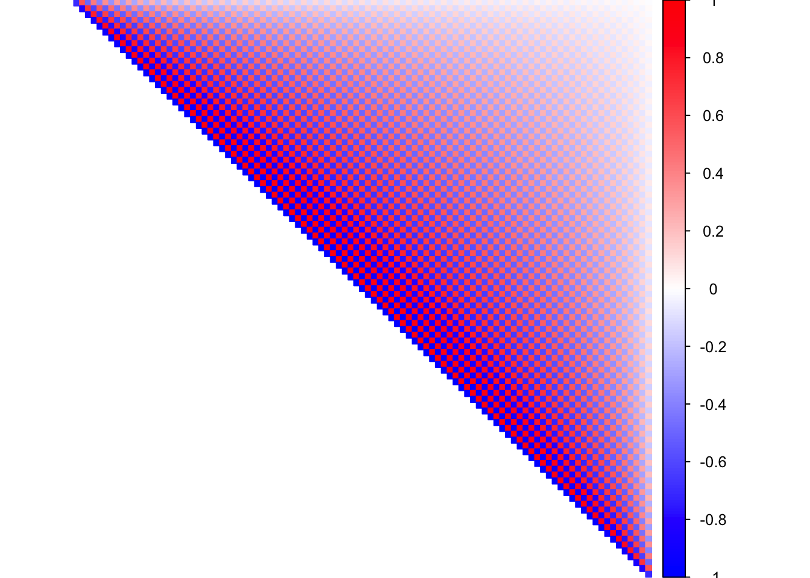
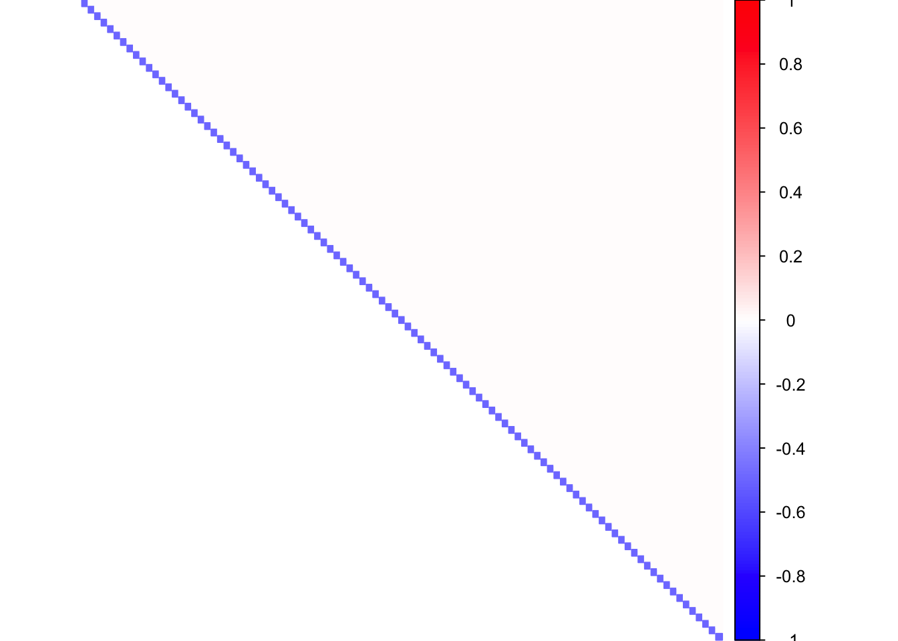

library(MASS)
library(Matrix)
library(CorShrink)
library(corpcor)
library(glasso)
library(scio)
library(corrplot)## corrplot 0.84 loadedWe consider the simulation models - Hub, Toeplitz and Banded precision matrices.
P <- 100
block <- 10
mat <- 0.3*diag(1,block) + 0.7*rep(1,block) %*% t(rep(1, block))
Sigma <- bdiag(mat, mat, mat, mat, mat, mat, mat, mat, mat, mat)
corSigma <- as.matrix(cov2cor(Sigma))
pcorSigma <- as.matrix(cor2pcor(corSigma))col2 <- c("blue", "white", "red")
corrplot(corSigma, diag = FALSE, col = colorRampPalette(col2)(200), tl.pos = "td",
tl.col = "black", tl.cex = 0.0001, rect.col = "white",
na.label.col = "white", method = "color", type = "upper")
col2 <- c("blue", "white", "red")
corrplot(pcorSigma, diag = FALSE, col = colorRampPalette(col2)(200), tl.pos = "td",
tl.col = "black", tl.cex = 0.0001, rect.col = "white",
na.label.col = "white", method = "color", type = "upper")
DM_toeplitz = function(n,P){
library("MASS")
index1=sort(sample(seq(1:n),(n/2)))
index2=seq(1:n)[-index1]
Sigmatp=function(P){
a=array(0,dim=c(P,P))
for(i in 1:P){
for(j in 1:P){
a[i,j]=max(1-0.1*(abs(i-j)),0)
}
}
return(a)
}
Sigma = Sigmatp(P)
data = mvrnorm(n,rep(0,P),Sigma)
Xtest = data[index2,]
Xtrain = data[index1,]
Omega = solve(Sigma)
return(list(Xtrain = Xtrain, Xtest = Xtest, Sigma = Sigma))
}
ll <- DM_toeplitz(n=10, P=100)
Sigma <- ll$Sigma
corSigma <- cov2cor(Sigma)
pcorSigma <- as.matrix(cor2pcor(corSigma))col2 <- c("blue", "white", "red")
corrplot(corSigma, diag = FALSE, col = colorRampPalette(col2)(200), tl.pos = "td",
tl.col = "black", tl.cex = 0.0001, rect.col = "white",
na.label.col = "white", method = "color", type = "upper")
col2 <- c("blue", "white", "red")
corrplot(pcorSigma, diag = FALSE, col = colorRampPalette(col2)(200), tl.pos = "td",
tl.col = "black", tl.cex = 0.0001, rect.col = "white",
na.label.col = "white", method = "color", type = "upper")
P <- 100
diags <- list()
diags[[1]] <- rep(1, 100)
diags[[2]] <- rep(-0.5, 100)
Kinv <- bandSparse(100, k = -(0:1), diag = diags, symm = TRUE)
K <- solve(Kinv)
corSigma <- as.matrix(cov2cor(K))
pcorSigma <- as.matrix(cor2pcor(corSigma))col2 <- c("blue", "white", "red")
corrplot(corSigma, diag = FALSE, col = colorRampPalette(col2)(200), tl.pos = "td",
tl.col = "black", tl.cex = 0.0001, rect.col = "white",
na.label.col = "white", method = "color", type = "upper")
col2 <- c("blue", "white", "red")
corrplot(pcorSigma, diag = FALSE, col = colorRampPalette(col2)(200), tl.pos = "td",
tl.col = "black", tl.cex = 0.0001, rect.col = "white",
na.label.col = "white", method = "color", type = "upper")
band.mat <- function(a, p, K=1, permu=c(1:p)){
ones = rep(1,p)
Omega0 = a*ones%*%t(ones)
diag(Omega0) = rep(1,p)
Omega = 1*band(Omega0,-K,K)
Sigma = qr.solve(Omega)
Sigma = Sigma*(abs(Sigma)>1e-4)
Sigma.half=chol(Sigma)
Sigma.half = Sigma.half*(abs(Sigma.half)>1e-4)
Sigma = Sigma[permu,permu]
Omega = Omega[permu,permu]
Sigma.half = Sigma.half[permu,permu]
obj = list(Sigma=Sigma, Omega = Omega, Sigma.half = Sigma.half)
}
make.data <- function(Sigma.half, n, p, seed){
set.seed(seed)
X = matrix(rnorm(n*p),n,p)%*%Sigma.half
return(X)
}
P <- 100
obj = band.mat(a=0.5, P, K = 1)
corSigma = as.matrix(cov2cor(obj$Sigma))
pcorSigma <- -as.matrix(cov2cor(obj$Omega))
diag(pcorSigma) <- rep(1, dim(pcorSigma)[1])col2 <- c("blue", "white", "red")
corrplot(corSigma, diag = FALSE, col = colorRampPalette(col2)(200), tl.pos = "td",
tl.col = "black", tl.cex = 0.0001, rect.col = "white",
na.label.col = "white", method = "color", type = "upper")
col2 <- c("blue", "white", "red")
corrplot(pcorSigma, diag = FALSE, col = colorRampPalette(col2)(200), tl.pos = "td",
tl.col = "black", tl.cex = 0.0001, rect.col = "white",
na.label.col = "white", method = "color", type = "upper")
This R Markdown site was created with workflowr